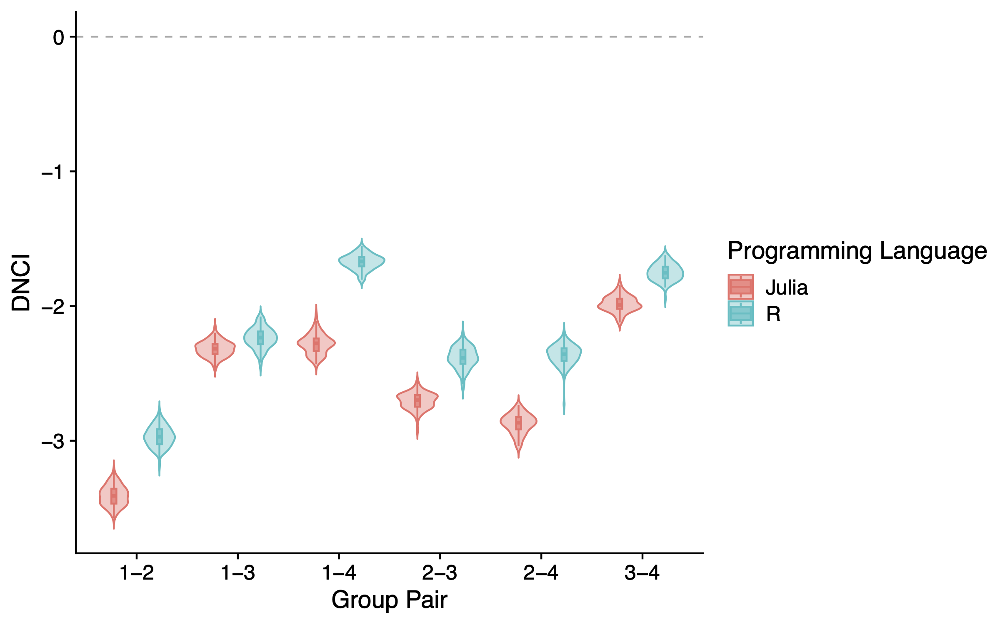

Validation
We validate all the calcuations in MetaCommunityMetrics that have equvilant functions in R to make sure the functions in MetaCommunityMetrics are correct and accurate as the equvilant functions in R. All validation results are presented to 4 decimal places (±0.0001) here. Floating-point differences between implementations smaller than 0.0001 were considered negligible for both statistical and ecological applications of these metrics.
Validation Result
Below is a comparison of the results between MetaCommunityMetrics and functions/equivalent implementation in R.
Beta Diversity
*Absolute Differences between the results from MetaCommunityMetrics and the equvilant functions in R are shown here. All values *
| TestCase | BDtotal | Repl | RichDif |
|---|---|---|---|
| Beta Diversity (Abundance, quant=true) | 0.0000 | 0.0000 | 0.0000 |
| Beta Diversity (Abundance, quant=false) | 0.0000 | 0.0000 | 0.0000 |
| Beta Diversity (Presence, quant=false) | 0.0000 | 0.0000 | 0.0000 |
| Spatial Beta Diversity (Abundance, quant=true) | 0.0000 | 0.0000 | 0.0000 |
| Spatial Beta Diversity (Abundance, quant=false) | 0.0000 | 0.0000 | 0.0000 |
| Spatial Beta Diversity (Presence, quant=false) | 0.0000 | 0.0000 | 0.0000 |
| Temporal Beta Diversity (Abundance, quant=true) | 0.0000 | 0.0000 | 0.0000 |
| Temporal Beta Diversity (Abundance, quant=false) | 0.0000 | 0.0000 | 0.0000 |
| Temporal Beta Diversity (Presence, quant=false) | 0.0000 | 0.0000 | 0.0000 |
Dispersal-niche continuum index
*A plot showing the distribution of the DNCI values of diffent group pairs from different programming language, each pair are runned for 100 times. 
Occupied Patches Proportion
Absolute Differences between the results from MetaCommunityMetrics and the equvilant functions in R are shown here.
| minproppatches | meanproppatches | maxproppatches |
|---|---|---|
| 0.0000 | 0.0000 | 0.0000 |
Variability Metrics
Absolute Differences between the results from MetaCommunityMetrics and the equvilant functions in R are shown here.
| CVSL | CVCL | CVSR | CVCR |
|---|---|---|---|
| 0.0000 | 0.0000 | 0.0000 | 0.0000 |
Hypervolume
Absolute Differences between the results from MetaCommunityMetrics and the equvilant functions in R are shown here.
Volume
| total | correlation | Temperature | Precipitation |
|---|---|---|---|
| 0.0000 | 0.0000 | 0.0000 | 0.0000 |
Volume dissimilarity
| Metric | total | correlation | Temperature | Precipitation |
|---|---|---|---|---|
| Bhattacharyya_distance | 0.0000 | 0.0000 | 0.0000 | 0.0000 |
| Mahalanobis_distance | 0.0000 | 0.0000 | 0.0000 | 0.0000 |
| Determinant_ratio | 0.0000 | 0.0000 | 0.0000 | 0.0000 |